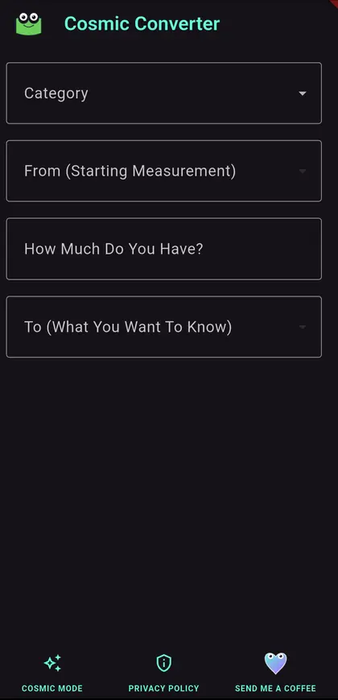
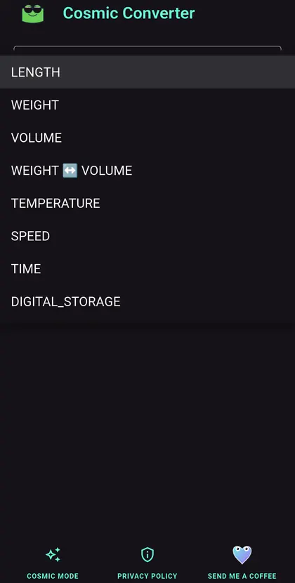
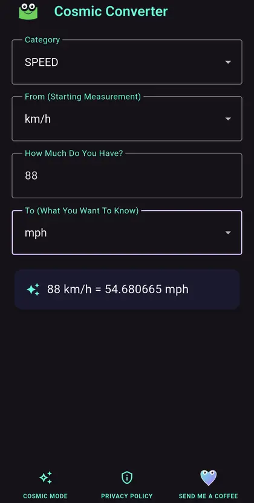

Android · APK download listed
Cosmic Converter
Everyday conversions, surprising categories, and a cosmic frog who refuses to make unit conversion boring.
View APK download & installation ↓A converter with a personality.
- Useful conversionsMeasurements, temperatures, time, digital storage, and other practical categories.
- Quick resultsChoose units, enter a value, and get a clear answer without digging through menus.
- Cosmic ModeA more colorful way to convert when ordinary buttons are simply not enough.
- Built for repeat useReadable controls and a focused layout keep common conversions close at hand.
A look inside Cosmic Converter
Straightforward controls, clear choices, and an answer when you need one.



Direct Android download
Get Cosmic Converter
Free, always. No ads, subscriptions, or paid unlocks.
Checking public download availability…
Only public releases published by Frogdadday appear here.
Installing an APK on Android
- Once available, download the APK on your Android phone.
- Open the file. Android may ask permission to install apps from your browser or file manager.
- Review system warnings; proceed only when you trust the source. Turn off the extra installation permission afterward.
Website APKs do not receive Google Play automatic updates. Updating an installed app requires a compatible Android package and signing certificate.
This page checks whether a public APK exists; it does not independently verify the file's safety or signing certificate.
Free. Simple. Respectful.
No ads, subscriptions, accounts, or paid features. Current public APK availability is shown above.